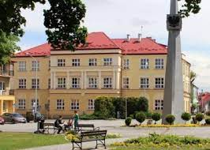
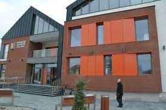
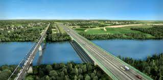

Nisko - punkt startowy i końcowy
Nisko to miejscowość w której mieszkam. Zawsze spotykam się tam z kolegami jak mamy pojechać trasą którą widać na wcześniej stronie.

Są tu ciekawe miejsca, nawet kino, ale w Stalowej Woli jest więcej opcji do wyboru

Oczywiście, wracając można tu zatrzymać się na chwilę nad Sanem i chwilę sobie go pooglądać przy rozmowie z przyjaciółmi
